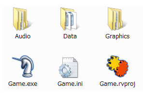

RGSS3, which is incorporated into RPG Maker VX Ace, has a number of differences from RGSS2, which was included with RPG Maker VX. The main differences are listed below.
In addition to the above, a number of other minor changes have been made.
In this manual, new functionality, modified specifications, and other changes are followed by RGSS3 in parentheses (RGSS3).

Normally, you launch RGSS by double-clicking the icon for the game file, Game.exe (or Game if the Windows option "Hide extensions for known file types" has been turned on). The folder that contains this file is called the game folder.
In-progress games can be started up by selecting [Playtest] from the menu or [Battle Test] from the Troop database. When this is done, the global variable $TEST will be set to true. When performing a Battle Test, the $BTEST variable will also be set to true.
Game operation is specified in Game.ini, the configuration file.
The Game.ini file is automatically created and updated by RPG Maker. It can also be edited manually with Notepad or another text editor.
Example:
[Game] RTP=RPGVXAce Library=System\RGSS300.dll Scripts=Data\Scripts.rvdata2 Title=RubyQuest
The trademark name of the RGSS-RTP the game is using. Usually "RPGVXAce".
If the specified RTP isn't installed, an error message will be displayed.
The name of the RGSS DLL. The file that was copied to the "System" folder within the game folder is the one that is normally used. (RGSS3)
The data file in which scripts are stored. Specified with a relative path to the game folder.
Ruby's scripts usually take the form of text files with the extension .rb, but RGSS uses one proprietary packaged file. This file cannot usually be edited without using RPG Maker's script editor. The data is comprised of multiple sections and is executed in the order lists are displayed.
The game title displayed in the game window's title bar.
An RTP (run-time package) is a mechanism that reduces game data size for distribution. It contains standard graphic and audio resources used across many different games. Installing these resources as a common file before playing a game eliminates the need to download the same files over and over.
RTP files can use the following methods from the built-in game library to access files as though they were in the game folder. The extensions can be left off the file names that are passed to the methods below. Their file types (such as .png or .mid) are identified automatically.
Bitmap.new, Audio.bgm_play, Audio.bgs_play, Audio.me_play, Audio.se_play, Graphics.transition
The only standard RTP for RPG Maker VX Ace is "RPGVXAce", but it is now possible to use RTPs with different structures. If you know how to make an installer, you can create a unique RTP at the user level according to the following rules.
By default, the RTP is installed in the following folder:
[CommonFilesFolder]\Enterbrain\RGSS3\[RTPName]Here, [CommonFilesFolder] is the location of the Windows "Common Files" folder, while [RTPName] is the name of the RTP. Here's an example:
C:\Program Files\Common Files\Enterbrain\RGSS3\Standard
The RTP installer creates a string value containing the RTP name in the "HKEY_LOCAL_MACHINE\SOFTWARE\Enterbrain\RGSS3\RTP" registry key and uses it to set the path. RGSS recognizes the string specified in this key as the RTP.
Encrypted archives make it difficult for others to analyze and/or modify the game contents. Normally, all data and graphic files (but not audio and font files) are stored in Game.rgss3a. You can create an encrypted archive by checking the [Create encrypted archive] box when compressing the game data.
The files within the encrypted archive can be accessed as though they were in the game folder by using the following methods from the built-in game library:
load_data, Bitmap.new, Graphics.transition
When there is an encrypted archive in the game folder, the script data (normally Data\Scripts.rvdata) defined in the Scripts line of Game.ini will always be read from the archive. This is a limitation that prevents files within the archive from being read by an external script.
Due to its nature, the encrypted archive's internal format has not, and will not, be released to the public. Please refrain from analyzing it.
RGSS cannot load Ruby extension libraries written in C. That is why an exception was made to allow the following extension libraries to be treated as if they were built in.
RGSS uses the UTF-8 character set. UTF-8 is a way of encoding Unicode, a character set that can display letters and characters from all the world's languages.
Script data and other text data output by RPG Maker is all UTF-8, but there is normally no need to pay particular attention to the difference between character sets.
The term "property" is used in the game library overview. This is not a concept in Ruby's specifications, but rather a term unique to RGSS.
For example, this is how to obtain and set a sprite's x-coordinate (Sprite#x):
x = sprite1.x # obtain sprite2.x = x + 32 # set
For the sake of convenience, methods that are defined to both obtain (read) and set (write) via assignment operators in this manner are called "properties".
When objects such as the Color class, the Tone class, or the Rect class are defined as properties, a reference to the object itself is returned to the caller, rather than a copy. This makes it possible to change the color of a font by using this format:
color = font1.color color.set(255, 0, 0)